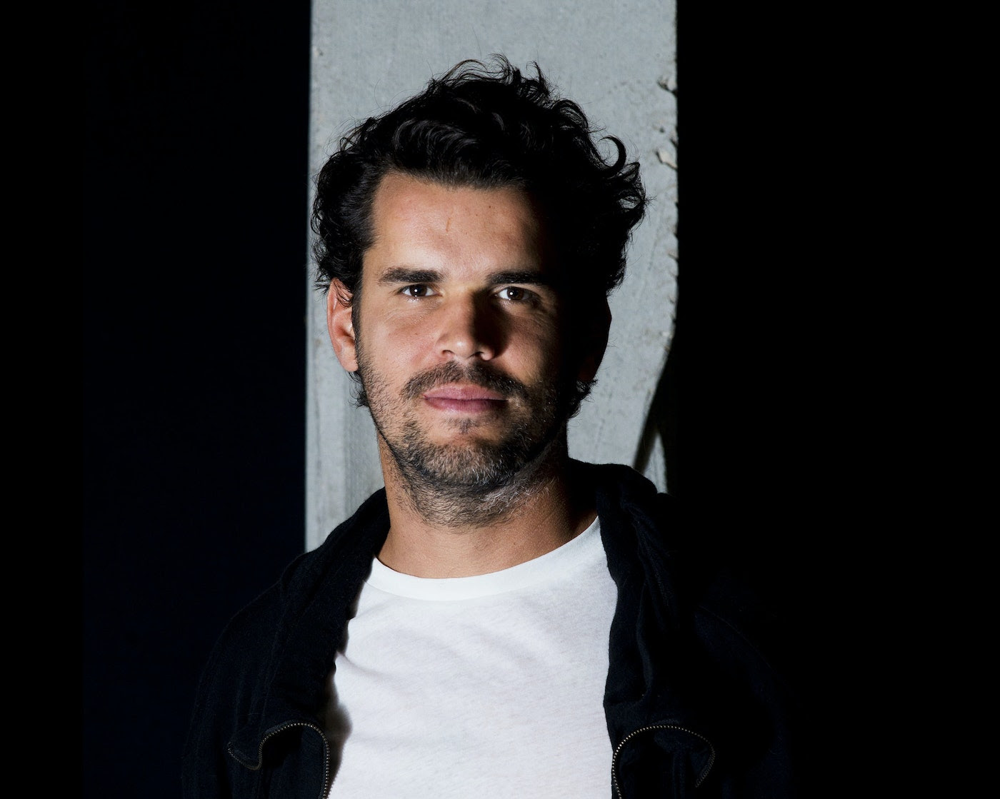

Design Studio Term 1 2022-23¶
Framing Design Interventions¶

Track¶
Application
Faculty¶
Oscar Tomico, Mariana Quintero, Tomas Diez, Jonathan Minchin, Tomas Vivanco
Syllabus¶
MDEF Research, Design and Development studios aim to take research areas of interest and initial project ideas into an advanced concretion point, and execution plan. The studio structure in three terms could be understood as follows:
TERM 1 Research: Understanding what it means to design for emergent futures. Analyzing the past and finding weak signals. References, state of the art. Identifying areas of interest. Experimenting from the first-person perspective.
TERM 2 Design: Forming the present through interventions in the real world. Building the foundations of your design space, forming strategic partnerships. Applying knowledge into practice through iterative prototyping. Testing ideas and prototypes in the real world.
TERM 3 Development: Refining interventions and identifying desirable futures. Establishing roadmaps for the construction of emergent narratives.. Communicating and disseminating your project through speculative design.
The first term Design Studio aims to create a solid ground for the students to start developing their projects. Weekly activities will be set to interlink results from the courses like their mappings, cartographies, experiments, 1st person design activities, prototypes, with their personal development plan. In order to propose an area of intervention at the end of the trimester. The Design Studio activities will consist of presentations, group activities, short exercises and personal coaching. The specific goals are the following:
To develop a critical position in the student’s design practice. Define possible areas of intervention, based on the Atlas of the Week Signals. Prototype an alpha version of the design space and iterate. To build personal and collective repositories of resources.
When¶
Every Monday
Schedule¶
03/10 Bootcamp Kick off - Pick your fight(s).¶
Goals: Integrate personal and professional interests.
Activity 1: Pick your fight(s). Make a poster of your interests.
Activity 2: Create your vision (pushing your fight further) and Identity (skills, knowledge, attitude), collaboration plan.
Deliverable 1: Post the poster on your website.
Deliverable 2: Document your vision, identity, collaboration plan and reflect on your personal development.
10/10 Roles of Prototyping in 1PP Research through Design¶
Goals: To learn about the different roles of prototyping in design research. Being resilient and resourceful as a professional. Learn about 1PP RTD iterative design interventions methodology.
Activity 1: From the different roles that prototypes play in design research, reflect which ones you have used in the past and which ones you could include in your practice.
Activity 2: Reflect on your own RtD toolbox based on your vision and identity. Select the main roles of prototyping and other design activities that you want to use based on the context you are in (onion mapping).
Deliverable: 1 Post on your website with your new extended workspace
17/10 Design Studio Reviews¶
24/10 Areas of interventions in a Multiscalar Design Space. Collaborative design spaces and interventions .¶
Goals: To explore and develop forms of aggregative documentation, building collective design spaces.
Activity: Develop a collective framework to document explorations using the existing digital platforms, build digital maps of resources and opportunities in the design studio.
Deliverable: A collaborative map of projects, resources, news, and opportunities for interventions … that can populate your physical working space and a plan on how to share relevant information between all of you on-line.
Task: Carry out different pilot design interventions to understand in an embodied and situated way your design space.
31/10 Design Studio Reviews¶
07/11 Video Journaling and Other Forms of 1PP Documentation and communication.¶
Objectives: Learn new ways of documenting and communicating. Integrate documentation and communication as part of your daily activities.
Activity: Reflect on how you are documenting and communicating the courses and the project. Present the successes and points of improvement.
Assignment: Document the course “Measuring the World + Almost Useful Machines”.
Deliverable 1: A reflection on how you are documenting and communicating your work.
Deliverable 2: A video which can include multiple ways of video journaling (interviews, personal reflections, activities, ...).
14/11 Design Studio Reviews¶
21/11 Collective design intervention: a collective design action with humans and/or non-humans + ELISAVA & Fab Lab Research Presentations¶
Goals: Situate your collective explorations in context to frame to update your collective design space.
Activity: Plan your collective design intervention and map the actors and infrastructure you want to involve.
Task: Execute your first collective design intervention for the next design studio.
Deliverable: Document the collective design intervention, analyze it and reflect on the findings.
28/11 Design Studio Reviews (group)¶
12/12 Design Dialogues Preparation¶
Goals: Create a collective and individual building up plan for the Design Dialogues exhibition.
Activity: Group dynamic to create themes and groups of projects for the exhibition.
Deliverable: Planning of the exhibition, space allocation and special needs.
Task: Work on the design dialogues deliverables.
22/12 Design Dialogues (Proposed date TBC)¶
Objectives: to present collective areas of intervention and to present the first experiments at a personal and collective level, and in an immediate context. To produce the first group exhibition of the master’s projects.
Deliverables: A series of prototypes presented in a collective design space and a personal video of no more than 3 minutes (answering the question what is your updated fight),
Deliverables for after the holidays: 5 high resolution images of the highlights of your Design Studio work during the term, a high resolution image of your personal and Collective design space and the first chapters of your Thesis Draft which represent each one of the deliverables developed during the term:
Chapter 0: What is your fight?. Vision and Identity. Personal development and Collaboration Plan.
Chapter 1: Research through Design Toolbox.
Chapter 2: Framing a collective Design Space based on AoWS, Multiscalar Design Space and State of the Art. Personally reflect on your area of interest and an area of intervention.
Chapter 3: First interventions (Experiments, Pilots and first collective intervention): Description and results.
Evaluation¶
These are the points we are going to look at for Term 1:
● Relevance of the project in relation to the weak signals
● Framing of the opportunity through the Collective Design Space
● Involvement of the community through the collective interventions
Grading Method¶
33% of the evaluation will be the Design Studio faculties’ combined grade, 33% will be the average grade your peers give you, and 33% will be the completion of your first Thesis draft.
Link¶
Tomas Diez¶

Tomas Diez is a Venezuelan Urbanist specialized in digital fabrication and its implications on the future cities and society. He is the co-founder of Fab Lab Barcelona, leads the Fab City Research Laboratory, and is a founding partner of the Fab City Global Initiative. He is the director of the Master in Design for Emergent Futures at the Institute for Advanced Architecture of Catalonia (IAAC) in Barcelona, where he is faculty in urban design and digital fabrication. Tomas is co-founder of other initiatives such as Smart Citizen (open source tools for citizen engagement), Fab City (locally productive, globally-connected cities), Fablabs.io (the listing of fab labs in the world), and StudioP52 (art and design space in Barcelona).
Oscar Tomico¶
Oscar Tomico holds an MSc degree in Industrial Engineering from Polytechnic University of Catalonia (Spain) and a PhD from the same institution, awarded in 2007 with Cum Laude. During his research into Innovation Processes in Product Design, he investigated subjective experience-gathering techniques based on constructivist psychology. After finishing his PhD he worked as a consultant for Telefonica R&D (Barcelona). Tomico joined Eindhoven University of Technology (TU/e) in 2007 as Assistant Professor. He has been a guest researcher and lecturer at AUT Creative technologies (New Zealand), at TaiwanTech (Taiwan), Swedish School of Textiles (Sweden), Institute of Advanced Architecture (Spain), University of Tsukuba, Aalto (Finland) to name a few. During his sabbatical in 2015, he worked as a consultant for the functional textiles department at EURECAT (Spain). He recently (2017) became the head of the Industrial Design Bachelor’s degree program at ELISAVA University School of Design and Engineering of Barcelona.
Twitter Account @otomico
Mariana Quintero¶

Multimedia developer, interaction designer & researcher, Mariana Quintero works and develops her practice at the intersection where digital fabrication technologies, digital literacy, and information and computation ethics & aesthetics meet, contributing to projects that investigate how digital information and technologies translate, represent, and mediate knowledge about the world. She is currently a faculty member and part of the strategic team at the Masters in Design for Emergent Futures at IAAC | Fab Lab Barcelona